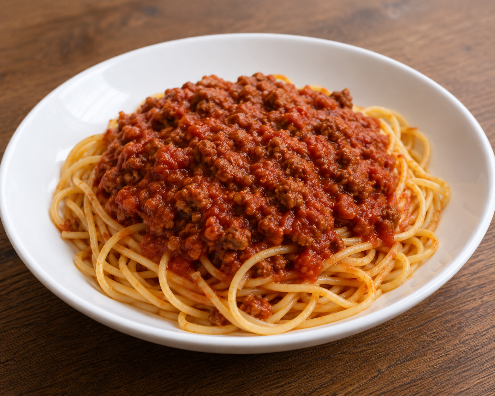

Spaghetti

Description
The contents of this page are AI slop generated just to complete this HTML project. We have a basic recipe for spaghetti bolognese from Google's AI overview with a ChatGPT-generated image to kick things off.
Ingredients
- Spaghetti
- Ground beef
- Canned tomatoes
- Garlic
- Onion
- Olive oil
- Salt
- Pepper
Steps
- Boil the spaghetti in salted water until cooked.
- Sauté the garlic and onion in a pan, then add the ground beef and brown it.
- Pour in the canned tomatoes, let it simmer for 15 minutes.
- Serve the sauce over the cooked pasta.
Home